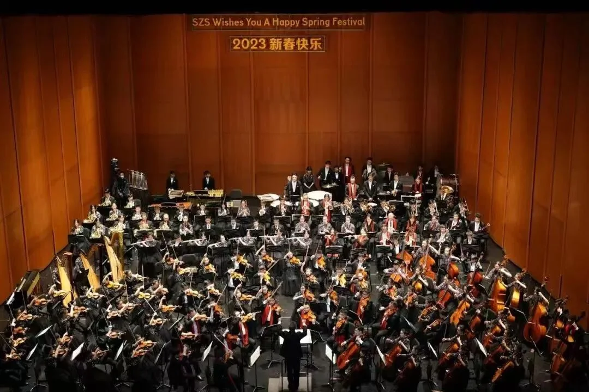

A piano, a little patience
I began piano in primary school and passed ABRSM Grade 8 in Grade 7 with 141/150. Learning theory and working through difficult passages gradually made music a source of relaxation and satisfaction.
06 / PIANO / CLARINET / ENSEMBLE
Finding my voice. Listening to others.
From the quiet discipline of piano practice to the shared sound of an orchestra, music is a place for expression, calm, and belonging.

THE STORY
I began piano in primary school and passed ABRSM Grade 8 in Grade 7 with 141/150. Learning theory and working through difficult passages gradually made music a source of relaxation and satisfaction.
I began clarinet in the second semester of Grade 6 and joined the Suzhou Youth Symphony Orchestra in Grade 8. Performances included the Shanghai Oriental Art Center and, in Grade 10, the National Centre for the Performing Arts. Ensemble playing taught me to listen across sections and shape my part within a shared interpretation.
In high school, I joined the classical music club and practised more solo passages. Developing my own phrasing and tone gave me new ways to connect with an audience, while rehearsing alongside peers made the club a community where I felt at home.